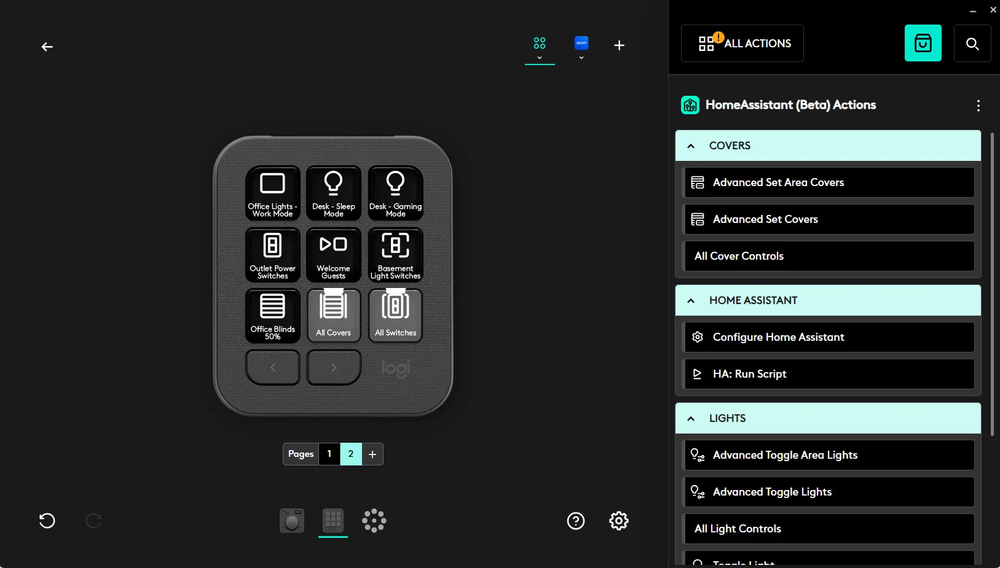

Selected work
-
Hop!
Unity · –present
I built and released Hop!, a complete one-touch Unity platformer, on the Google Play Store. Players unlock character skins and can compete on a global leaderboard.
I implemented cloud saving with Google Play Games, opt-in analytics, rewarded ads, and a shop with restorable in-app purchases. I added in-app consent controls and published the privacy policy and terms of service.
Watch gameplay and skins (31 seconds)
A Classic run unlocks Sprout. The player browses the shop, equips Sprout, and plays again. The reel ends with Prism Cube on the neon Prism Circuit and a Phoenix gameplay preview. Open MP4 -
Home Assistant for Logi Options+
Logitech · –
My open-source C# plug-in reached 5,000+ installs in beta on the Logi Marketplace. It lets people control Home Assistant devices with Logitech buttons and dials, with automatic discovery and real-time state updates.
See my console layout

I shared this setup in my Home Assistant Community post. -
Finding evidence in 13,022 videos
EPFL & Idiap · –
I presented our paper as first author at ACM ICMR’s 2026 ICDAR workshop in Amsterdam. I built a retrieval-augmented generation pipeline to search French-language YouTube transcripts about the UN Sustainable Development Goals. Rewriting queries raised the model-judged score from 3.68 to 3.96 out of 5 across 15 questions.
-
Measuring screen-to-light latency
Logitech MSc thesis ·
I built a Matter.js pipeline to drive smart lights from game visuals over Wi-Fi. Packet captures and photosensor measurements showed that most of the delay occurred after commands left the PC.
View latency measurements
Mean screen-to-light latency - Uncongested Wi-Fi 29.15 ms
- Competing traffic 40.95 ms
About 113 Mbit/s of competing Wi-Fi traffic raised mean latency by 40%. Both bars use a 0–50 ms scale.
I compared two runs per condition, generating background TCP traffic between a laptop and a phone on the same network. The longest observed response was 61 ms without congestion and 112.5 ms under load.
-
Porting a passive network monitor to NFOS
EPFL DSLAB ·
I ported PRADS, a passive real-time network monitor written in C, to the lab’s parallel network function runtime. I tested its main functionality on one and two cores and filed 11 runtime issues.
-
DrawYourPath
Android team project ·
On a team of six, I built Kotlin map previews for past runs, let runners share routes in chat, and connected friend search and lists to Firebase.
Experience
-
Logitech
Engineering Intern, Office of the CTO · –
I built a multi-device Wi-Fi and Matter testbed and prototyped smart-home controls for the MX Creative Console and Actions Ring.
-
Capital Ship Management
Software Development Intern · –
I worked with the finance team to build a React and MUI app for viewing and editing the company’s tax forms, connected to its existing back end.
Education
-
MSc in Computer Science, EPFL
–
Focused on AI, networking, and data management, with a minor in Management, Technology and Entrepreneurship. Final grade 5.45/6, with 6/6 for the thesis and research project.
-
BSc in Computer Science, EPFL
–
Focused on software engineering, networking, and machine learning.
About
I grew up in Greece, learned Pascal in a school club, and was one of 20 students selected for Greece’s Informatics Olympiad preparation camp. In Lausanne, I led five Greek Students Association events with more than 900 attendees in total. I like windsurfing and skiing.
- Languages
- Greek and Romanian (native), English (C2), French (B2)